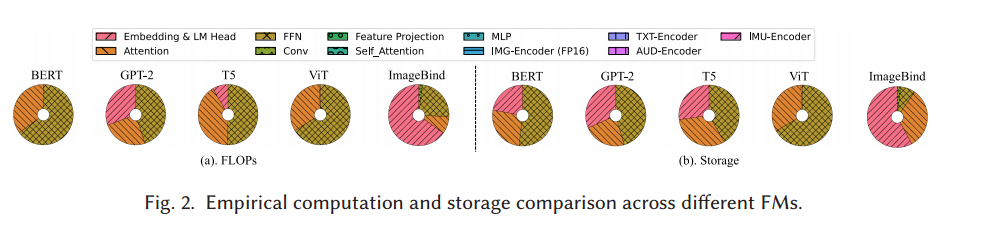
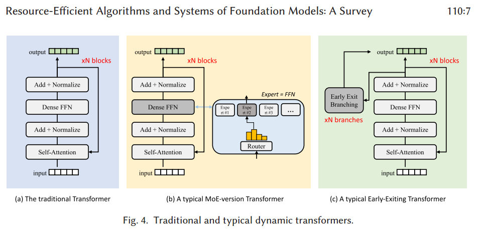
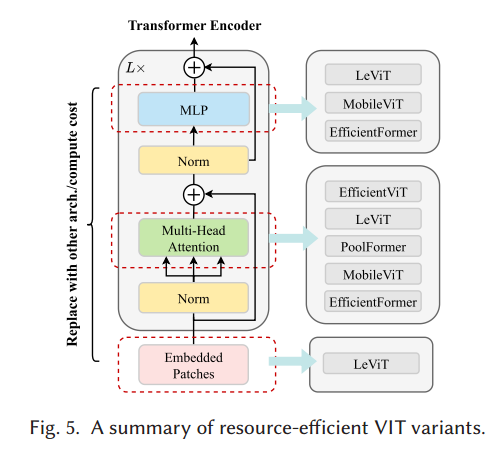
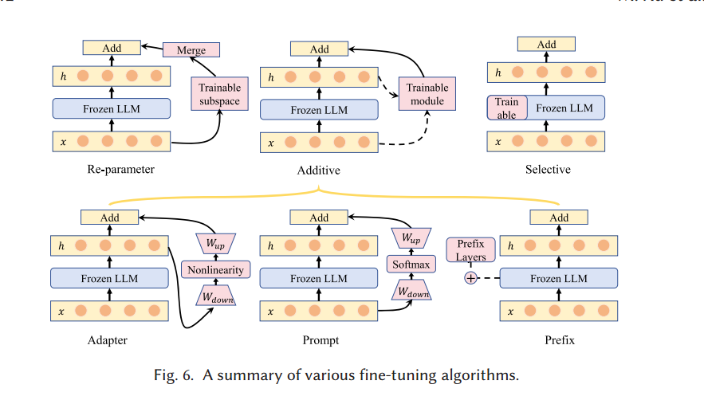
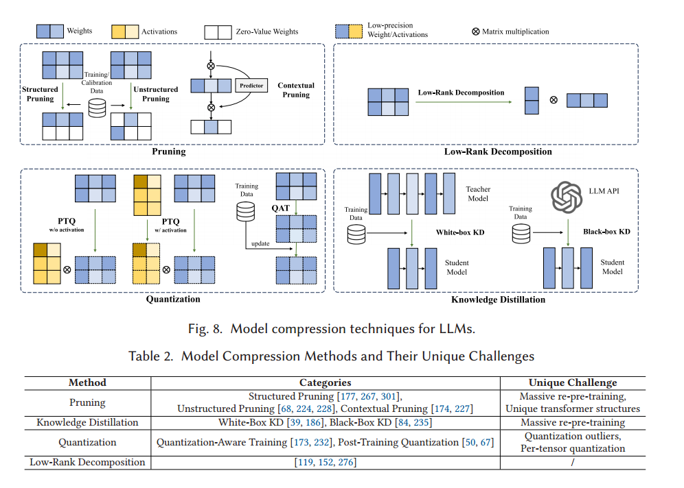

Source: Zotero note; match: identical attachment.Open item in Zotero
Large foundation models, including large language models, vision transformers, diffusion, and large language model based multimodal models, are revolutionizing the entire machine learning lifecycle, from training to deployment. However, the substantial advancements in versatility and performance these models offer come at a significant cost in terms of hardware resources. To support the growth of these large models in a scalable and environmentally sustainable way, there has been a considerable focus on developing resource-efficient strategies. This survey delves into the critical importance of such research, examining both algorithmic and systemic aspects. It offers a comprehensive analysis and valuable insights gleaned from existing literature, encompassing a broad array of topics from cutting-edge model architectures and training/serving algorithms to practical system designs and implementations. The goal of this survey is to provide an overarching understanding of how current approaches are tackling the resource challenges posed by large foundation models and to potentially inspire future breakthroughs in this field.
One-size-fits-all foundation models:
LLM、ViT、LDM、 Multimodal Model -> Scalability -> Resource Demand
e.g Pretraining LLaMa-2-70B -> 1.7 mil GPU hours + 2.5e12 J Energy
2. FM Overview
(1) Language FMs - Attention-based Transformer Architecture - Discrimination, Generative
(2) Vision FMs - ViT Architecture - Discrimination, Generation
(3) Multimodal FMs - multiple transformer encoders for each modality
(4) Cost Analysis

high cost: Attention Mechanism、FFN
3 Resource-Efficient Architectures
(1) Efficient Attention
·Sparse Attention
“This approach aims to retain the empirical advantages of a fully quadratic self-attention scheme while employing a reduced number of inner products.”
·Approximate Attention
“Approximate attention mainly includes low-rank approximations of the self-attention matrix and innovative reformulations of the self-attention.”
·Attention-free Approaches - Hyena、SSM、Recurrent-style Transformers
(2) Dynamic Neural Network

·MoE
“This model utilizes routed sparse parameters during inference.”
·Early Exiting
“a strategy that allows a model to terminate its computational process prematurely when it attains high confidence in the prediction or encounters resource constraints.”
(3) Diffusion-Specific Optimization
·Efficient Sampling - Nichol and Dhariwal, DDIM, PNDM, DPM-Solver
·Diffusion in Latent Space
·Diffusion Architecture Variants

(4) ViT-Specific Optimizations
4. Resource-Efficient Algorithms
(1)Pre-Training Algorithm
·Training Data Quality Control - DataComp, DFN, DataCompDR
·Training Data Reduction - Deduplicating text datasets, Image patch removal
·Progressive Learning
“begins by training a small model and then gradually increases the model size, throughout the training process.”
·Mixed Precision Training
“Mixed precision training often utilizes half-precision floatingpoint data representation instead of single precision.”
(2) Fine-tuning Algorithm

·Additive Tuning - Adapter tuning, Prompt tuning, Prefix tuning
·Selective Tuning
“freezing the majority of parameters in large FMs and selectively updating only a small portion of the parameters.”
·Re-parameter Tuning - LoRA
“adapts large FMs by targeting a significantly smaller subspace than the original, expansive training space. This approach involves fine-tuning low-rank matrix parameters, a technique that effectively reduces the overall training cost.”
(3) Inference Algorithm
·Optimistic Decoding
“The autoregressive mechanism significantly hinders the inference efficiency of large FMs. To address this, various approaches aim to replace autoregressive decoding with more efficient non-autoregressive techniques.”
·Input Filtering and Compression
“This method includes directly filtering raw data (i.e., prompt filtering) or filtering hidden activations of FMs (i.e., token pruning).”
·KV Cache - Memory Efficient Sparse Attention, Long Context
(4) Model Compression

·Pruning - Structured Pruning, Unstructured Pruning, Contextual Pruning
“removes redundant or non-essential connections, neurons, or layers from a neural network. The primary objective is to reduce the model size, subsequently decreasing computational and storage costs, while maintaining model accuracy.”
·Knowledge Distillation - Black-Box KD. White-Box KD
“KD transfers knowledge from a complex, heavy model (i.e., teacher model) to a simpler corresponding model (i.e., student model) for model compression.”
·Quantization - Quantization-aware training, Post-training quantization, Weight-only Quantization, LoRD
“Quantization is a well-established model compression method to mitigate the storage and computational demands. Compared to traditional DNNs, LLMs exhibit a higher frequency of activation outliers, which are crucial for maintaining model accuracy.”
5. Resource-Efficient Systems
(1)Distributed Training
·Resilience
“The increasing size and duration of training for large FMs have led to a rise in failures, emphasizing the importance of resilient training [261]. Fault tolerance approaches for large FMs primarily manifest in four forms.”
·Parallelism
“Parallelism plays a crucial role in distributed training, especially for large FMs. Three types of parallelism are commonly employed for training large FMs. Data parallelism involves distributing the data across workers to scale up distributed training.”
·Communication - parallelism-aware communication, heterogeneity-aware traffic reduction
“We summarize the optimization of communication into two categories: reducing the communication time directly and hiding the communication.”
·Storage - Offloading
·Heterogeneous GPUs
·Mix-of-Experts
(2)Hardware-Aware Optimizations
(3)Serving on Cloud - Inference Acceleration, Memory Saving
(4)Serving on Edge - Edge-Cloud Collaboration, On-Device MoE, Memory Optimization, I\O Optimization, Kernel Optimization
Tips: What aspects did you question, how do you think it can be improved?
Tips: What was done, what problem was solved, innovations and shortcomings?